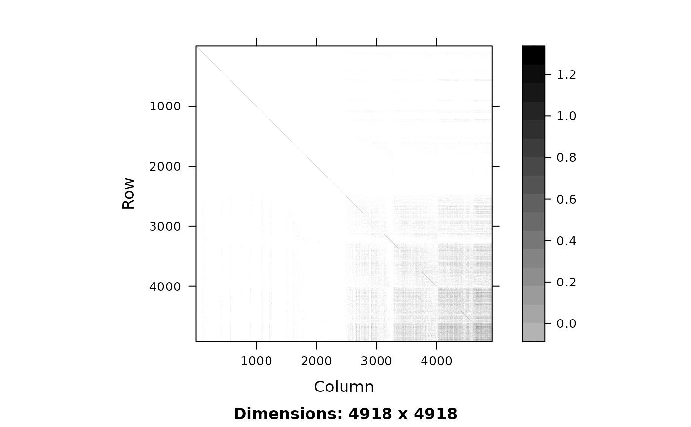
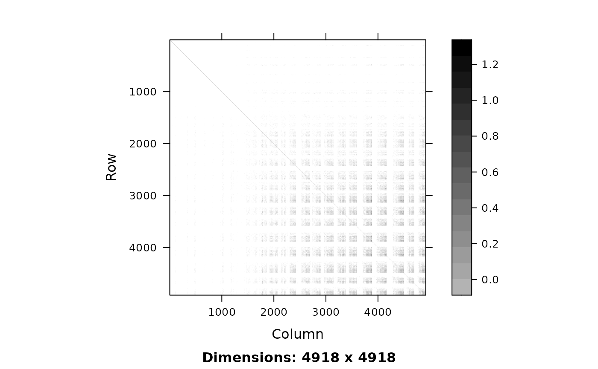
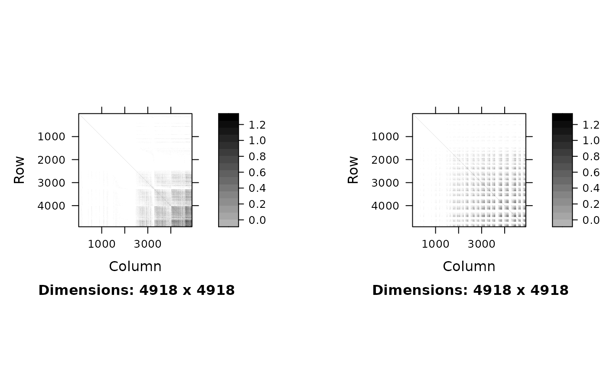

Produce a graphical representation of the relatedness matrix of a pedigree
draw_pedA.RdCreates the object needed to plot a pedigree's numerator relatedness matrix given a few different choices for ordering. The resulting image for a pedigree of size n can be visualized as a n x n grid of colored squares based on values of the numerator relatedness matrix.
Usage
draw_pedA(
pedigree,
order = c("original", "generation", "user"),
grp = NULL,
...
)Arguments
- pedigree
A data.frame of a pedigree with 3 columns: id, dam, sire
- order
A character expression for how the pedigree should be ordered for visualization. See Details.
- grp
A character expression for the column name in pedigree indicating how to order the pedigree for visualization.
- ...
Additional plotting arguments passed to
image.
Examples
data(gryphons)
pedigree <- fix_ped(gryphons[, 1:3])
## draw the gryphon pedigree
draw_pedA(pedigree, order = "original")

## draw the gryphon pedigree by function assigned generation
(Agen <- draw_pedA(pedigree, order = "generation"))
## draw the gryphon pedigree by cohort in the dataset
## add cohort back from original data
pedigree$cohort <- NA
pedigree$cohort[match(gryphons$id, pedigree[, 1])] <- gryphons$cohort
(Achrt <- draw_pedA(pedigree, order = "user", grp = "cohort"))

## show two images of the same pedigree in different orders
### (i.e., plotting multiple trellis objects in the same figure)
plot(Agen, position = c(xmin = 0, ymin = 0, xmax = 0.45, ymax = 1),
more = TRUE)
plot(Achrt, position = c(xmin = 0.55, ymin = 0, xmax = 1, ymax = 1))
